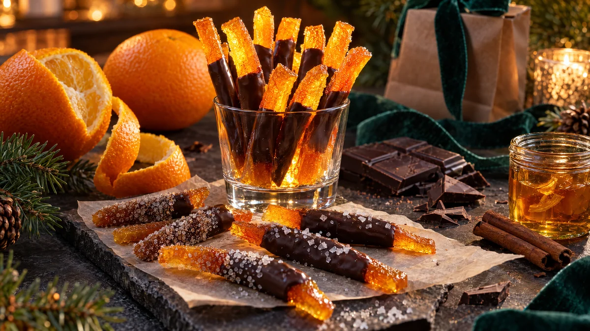

RESTFEST · RECEPTGodis & konfekt · Fika & bakning
Kanderade apelsinskal doppade i mörk choklad
Skalen från fruktskålens apelsiner, som annars hamnar i komposten, kokas mjuka och kanderas tills de lyser som bärnsten. Halva staven doppas i mörk choklad och får några flingsaltkorn. Konfekt som ser ut att kosta en förmögenhet, gjord på det du brukar slänga.
- Förberedelse
- 20 min + torkning över natten
- Tillagning
- 75 min
- Portioner
- ca 50 stavar
- Nivå
- Medelsvårt
 Det här behöver du
Det här behöver du
Tryck på + vid det du behöver köpa.
Kanderade skal
Chokladdopp
Gör så här
- Skrubba apelsinerna i varmt vatten. Skär av topp och botten, ritsa skalet i fyra delar på längden och dra av det. Ät frukten eller pressa den till juice.
- Skär skalen i stavar, ca 6 mm breda. Den vita hinnan får sitta kvar, den blir mjuk och god.
- Lägg stavarna i en kastrull, täck med kallt vatten och koka upp. Låt koka i 2 minuter och häll av. Upprepa två gånger till med nytt kallt vatten. Det tar bort beskan.
- Koka upp 3 dl socker och 3 dl vatten i samma kastrull tills sockret har löst sig. Lägg i skalen och låt sjuda på låg värme i 45–60 minuter, tills de är genomskinliga och glansiga. Rör försiktigt då och då.
- Lyft upp stavarna med en hålslev och lägg dem på ett galler över ett bakplåtspapper, så att de får rinna av i 30 minuter. Spara sirapen, den är god i te och drinkar.
- Rulla hälften av stavarna i strösocker om du vill. Låt alla torka på gallret över natten, tills de inte längre är klibbiga.
- Smält två tredjedelar av chokladen i en skål över sjudande vatten. Ta av skålen och rör ner resten av chokladen tills den har smält. Då blir chokladen blank när den stelnar.
- Doppa ena halvan av varje stav i chokladen, låt överskottet rinna av och lägg staven på bakplåtspapper. Strö över några flingsaltkorn och låt chokladen stelna.
Dekoration och servering
- Ställ stavarna på högkant i ett litet glas, med chokladen nedåt, som en bukett.
- Blanda sockrade och blanka stavar på samma fat, det ger fin variation.
- Packa dem i en smal cellofanpåse eller en glasburk med ett sidenband.
- Förvara dem i en lufttät burk i rumstemperatur, där håller de i ca 3 veckor.
- Fungerar lika bra med citron- eller grapefruktskal.
Mått och ugnstemperaturer
Måtten är svenska (dl, msk, tsk, krm). Ugnstemperaturerna gäller vanlig ugn med över- och undervärme; med varmluft, sänk med 20 grader.